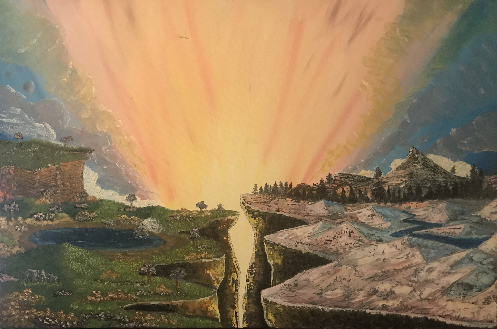

Home
|
Bio
|
Portfolio
|
Contact
Programming & Production Portfolio
Here are some websites I've built in HTML/CSS/ & JavaScript
Mountain Iron LLC
Here are some ADTs I built in C.
Linked List Stack ADT (C)
Linked List Queue ADT (C)
Stack from Queues ADT (C)
Dynamic Array Stack ADT (C)
Floating Deque Array ADT (C)
Non-circ Linked List Deque ADT (C)
Circular Linked List Deque ADT (C)
Here are some programs I wrote in C++.
Ancient Greece Console Game (C++)
Fantasy Combat Console Game (C++)
Zoo Simulator Console Game (C++)
Langton's Ant Simulator (C++)
Here are some Assembly Language programs I wrote in MASM (x86).
Simple Calculator Program (MASM x86)
Fibonacci Numbers Generator (MASM x86)
Average Number Calculator (MASM x86)
Composite Number Generator (MASM x86)
Random Number Sorter (MASM x86)
Combinations Problem Quizzer (MASM x86)
I edited
Dentistry Uncensored
for three years (1,000+ episodes).
Here's a game I started using C# in Unity.
(view scripts
here
)
I like to make beats and write music with Ableton.
I like to make videos for my beats with Final Cut!
Waaay back when I tinkered with stop motion.
And I used to paint back in the day, too! (Thanks, Bob Ross!)

Download Resume
PayPal